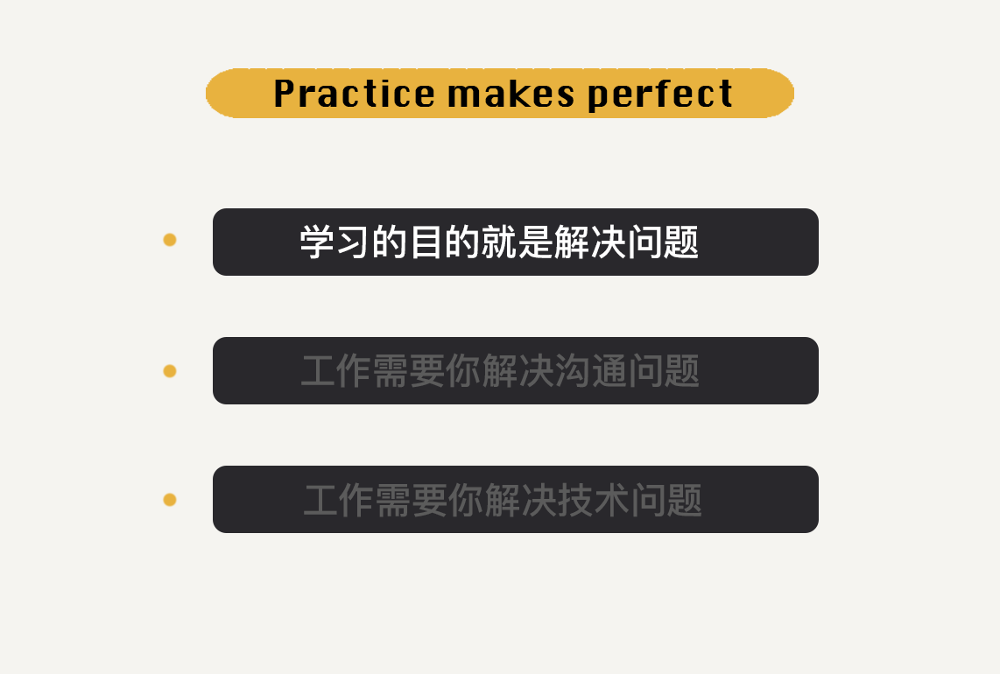
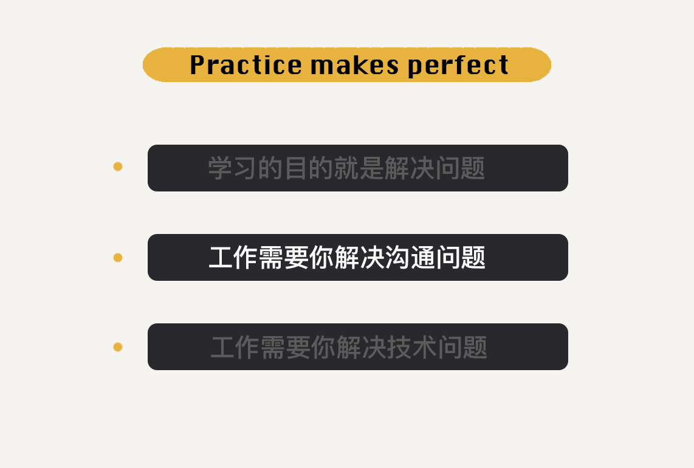
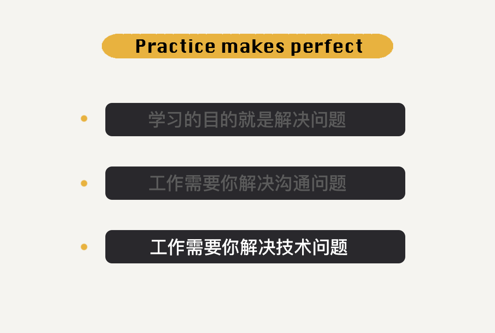

- 00 开篇词 从这里开始，带你走上硅谷一线系统架构师之路.md
- 01 为什么MapReduce会被硅谷一线公司淘汰？.md
- 02 MapReduce后谁主沉浮：怎样设计下一代数据处理技术？.md
- 03 大规模数据处理初体验：怎样实现大型电商热销榜？.md
- 04 分布式系统（上）：学会用服务等级协议SLA来评估你的系统.md
- 05 分布式系统（下）：架构师不得不知的三大指标.md
- 06 如何区分批处理还是流处理？.md
- 07 Workflow设计模式：让你在大规模数据世界中君临天下.md
- 08 发布_订阅模式：流处理架构中的瑞士军刀.md
- 09 CAP定理：三选二，架构师必须学会的取舍.md
- 10 Lambda架构：Twitter亿级实时数据分析架构背后的倚天剑.md
- 11 Kappa架构：利用Kafka锻造的屠龙刀.md
- 12 我们为什么需要Spark？.md
- 13 弹性分布式数据集：Spark大厦的地基（上）.md
- 14 弹性分布式数据集：Spark大厦的地基（下）.md
- 15 Spark SQL：Spark数据查询的利器.md
- 16 Spark Streaming：Spark的实时流计算API.md
- 17 Structured Streaming：如何用DataFrame API进行实时数据分析_.md
- 18 Word Count：从零开始运行你的第一个Spark应用.md
- 19 综合案例实战：处理加州房屋信息，构建线性回归模型.md
- 20 流处理案例实战：分析纽约市出租车载客信息.md
- 21 深入对比Spark与Flink：帮你系统设计两开花.md
- 22 Apache Beam的前世今生.md
- 23 站在Google的肩膀上学习Beam编程模型.md
- 24 PCollection：为什么Beam要如此抽象封装数据？.md
- 25 Transform：Beam数据转换操作的抽象方法.md
- 26 Pipeline：Beam如何抽象多步骤的数据流水线？.md
- 27 Pipeline IO Beam数据中转的设计模式.md
- 28 如何设计创建好一个Beam Pipeline？.md
- 29 如何测试Beam Pipeline？.md
- 30 Apache Beam实战冲刺：Beam如何run everywhere_.md
- 31 WordCount Beam Pipeline实战.md
- 32 Beam Window：打通流处理的任督二脉.md
- 33 横看成岭侧成峰：再战Streaming WordCount.md
- 34 Amazon热销榜Beam Pipeline实战.md
- 35 Facebook游戏实时流处理Beam Pipeline实战（上）.md
- 36 Facebook游戏实时流处理Beam Pipeline实战（下）.md
- 37 5G时代，如何处理超大规模物联网数据.md
- 38 大规模数据处理在深度学习中如何应用？.md
- 39 从SQL到Streaming SQL：突破静态数据查询的次元.md
- 40 大规模数据处理未来之路.md
- FAQ第一期 学习大规模数据处理需要什么基础？.md
- FAQ第三期 Apache Beam基础答疑.md
- FAQ第二期 Spark案例实战答疑.md
- 加油站 Practice makes perfect！.md
- 结束语 世间所有的相遇，都是久别重逢.md
加油站 Practice makes perfect！
你好，我是蔡元楠。
端午节了，先祝你节日快乐。不知道正在读文章的你这几天是不是有什么娱乐活动。我最近去参加了湾区一年一度的“三俗”活动——摘樱桃。而且，还看了一个有意思的电影《疾速备战》（John Wick: Chapter 3-Parabellum），推荐给你。
说归正题，在专栏的更新过程中，对于“留言的处理”这一点我还是要先道个歉，前段时间因为一些个人原因比较忙，所以对于问题的回复没有做好。我会努力把答疑这件事重新做起来。既然有问题了，就是要解决掉才行。
专栏进程也已经过半了，我好像感觉到同学们的阅读热情都在降低，排除“养肥了再读”的情况，可能是因为很多人进入了学习的“倦怠期”。我想了下，正好又到了假期，也许是应该专门写一篇文章，来跟你“聊聊天”。毕竟对于绝大部分人来说，“学习”这件事情真的是“逆人性”的，总需要一些建议和鼓励。
学习的目的就是解决问题

说实话，我们都不是天生以学习为乐趣的“学神”，所以现在我们的学习目的往往就是集中在“解决问题”上。而事实上，“解决问题”这件事其实并不是我们从工作的时候才开始面对的。
还记得我们在校园时期受的最多的训练吗？那就是“做题”。枯燥无味的“做题”过程就是我们接受的最初的对于“解决问题”的训练。在这个“做题”过程中学会的解决问题的方法一定是你至今都在受用的。
只不过是不同阶段里，你需要解决的问题的主题会变化而已。小时候应付数学题，生活中要应对和男/女朋友吵架，工作中要应对定义设计技术系统，等等。
当然，我们要面对的这些问题的规模也一直在变化。就像我们小时候做的题：根据a和b，求c是多少？已知条件都有，正确解法只有一个。而成人世界的问题：怎样改善北京的交通？已知条件你不是很了解，解法也不止一个，而且很难验证。
我十分同意Amazon创始人贝索斯的一句话，“与其看20年后什么会变，不如看什么不会变”。在我们的人生中，不会变的就是“人要解决问题”这件事。
工作需要你解决沟通问题

其实学习方法有很多，如果套用机器学习的术语，我们在学生时期常用的解决问题方法是Reinforcement Learning的Imitation Learning，也就是模仿学习。孔子所说的举一反三也是在说这个道理，通过做一个题，学会做相似的其他题。
当然，不只是具体的技术问题，与他人的沟通交流中也可以用上这样简单的道理。
举个例子吧，之前有一段时间里，一直困扰我的问题是，我主持的会议议程总是被人打断。
Let’s take a step back, …- Before we talk about this, let’s talk about…- ……
而解决这个问题的方法和学生时期一样，就是模仿。模仿那些把会议组织好的人，学习他们做了什么，看他们是如何沟通的，再套用到自己身上加以练习。这里我自己总结了很多细节，比如提前一天再把agenda发给参加会的人，会议开始前把agenda投影上去，被人打断了再强势打断回来，等等。
That’s an important topic, let’s have a separate meeting.- Let’s put it offline.- We only have 20min left, let’s…- ……
前面说过，学习的目的是解决问题。知道学习的方法只是第一步，更重要的是你要把它用到自己的工作、生活中。
工作需要你解决技术问题

说到这儿，我不知道你是不是了解我的工作，我给你简单介绍一下吧。其实这方面挺简单的，你随意Google一下，都能找到有关Google Brain的介绍。
Google Brain的雏形起源于一项斯坦福大学与Google的联合研究项目。
2011年，Google资深专家杰夫·迪恩（Jeff Dean）、研究员格雷·科拉多（Greg Corrado）和吴恩达（Andrew Ng）教授是这个小团队的最初三名成员。团队有多个主要研究方向，包括机器学习算法和技术、医疗健康、机器学习支撑计算机系统、机器人、自然语言理解、音乐艺术创作和知觉仿真等。
我现在的工作方向就是医疗健康，主要负责的是癌症相关的AI应用。
比如，能否把所有癌症相关的数据更有效地整理起来，让医生和研究者更方便地查询。这些数据非常多，包括诊断过程中的CT、活检切片、基因序列、治疗过程中患者对于不同疗法的反应，等等。
再举个细点的例子吧。有研究者发现，免疫疗法对于癌症患者的有效程度更多的是取决于癌变组织周围的免疫细胞环境。在这一前提下，我们要解决的问题就是：能否用AI来分析癌变组织的免疫细胞环境？
看到这，你大概能理解了，拥有大规模数据的整理、搜集、存储、分析能力，是我们完成工作内容的先决条件。而我们日常要锻炼的、加强的也就是这些解决技术问题的能力。
当然，可能大公司和小团队侧重的方面并不相同。如果你在一个小团队里，这个小团队里更看重的是你是否对这个事业有兴趣。但是，大公司主要看重的还是员工解决沟通问题和解决技术问题的能力。
这一点如果体现在面试流程的情境中，你可以这样理解：站在面试流程制定者的角度，他们设计一些面试流程的目的只是为了判定这个人进公司后是不是能成为一个好的同事，帮助公司成功。
所以，在面试的过程中，你可以先给自己一个人设，就是把自己当作是“面试官的同事”。把面试问题的内容定义成一个需要解决的问题，一个需要你们去共同解决的问题。比如，面试题条件没给全的时候，完全不需要惊慌，他很有可能是故意的，你需要做的是去和面试官沟通我们这个项目需求。
这与真实的工作中一样，拿到一个项目后，你要马上开始死命地工作吗？不是的。你应该是要多去问为什么。为什么做这个项目？团队想要达到什么目标？想要短期的方案还是长期的方案？这样的心态摆好之后，剩下的就是你的技术问题了。
从看到学，是一件事；从学到用，是一件事；从用到会，又是另外一件事了。而解决技术问题方法只有一个：Practice makes perfect！
今天说了这么多，其实都是我自己的一些经验。那么对于“如何解决问题”这一点，你可以分享一下你的经历吗？
© 2019 - 2023 Liangliang Lee. Powered by gin and hexo-theme-book.